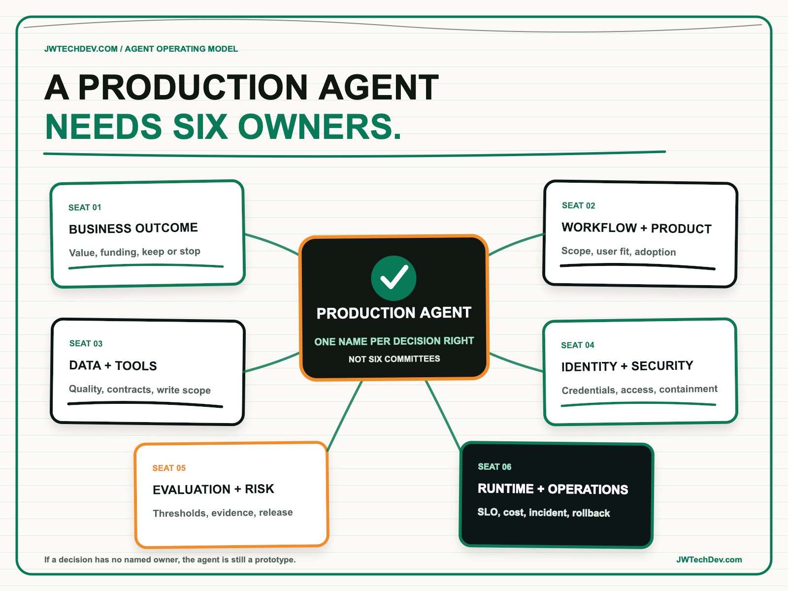

The six owners every production AI agent needs.
A production agent crosses business outcomes, user workflows, data, tools, identity, risk, and operations. Giving all of that to one technical owner creates hidden decisions. Giving it to a committee creates no decisions. The answer is six explicit seats with one named person for each decision right.

Quick answer
Every production AI agent needs six ownership seats: business outcome; workflow and product; data and tools; identity and security; evaluation and risk; and runtime and operations. These seats do not require six full-time people. One person may hold more than one seat in a small team. What matters is that every consequential decision has one named owner, a defined authority, an escalation path, and a backup.
I call this the Six-Seat Agent Ownership Card. It turns “the AI team owns it” into an operating contract. The card should travel with the agent from intake through release, incident response, material change, and retirement.
Why one owner fails
An agent is not only a model endpoint. It may act on behalf of a user, retrieve credentials, call tools, write into systems, retain memory, spend money, and make choices that affect a workflow. AWS AgentCore now separates runtime, identity, gateway, policy, observability, evaluations, and optimization into distinct production capabilities. That separation is an architecture signal: the operating decisions are different too.
A model engineer can tune prompts and still lack authority to accept business risk. A security leader can restrict access and still be unable to decide whether the workflow creates value. A product owner can prioritize adoption and still be unable to restore a failed runtime. When the roles stay implicit, incidents become meetings where everyone is informed and nobody can act.
NIST's AI Risk Management Framework calls for documented roles, responsibilities, communication lines, ongoing monitoring, system inventory, and safe decommissioning. AWS Well-Architected similarly emphasizes shared goals, clear authority, and an operating model in which teams understand their role in the workload and in one another's success. Ownership is therefore part of the production design, not paperwork added after launch.
The Six-Seat Agent Ownership Card
1. Business outcome owner. This person owns the result, funding, success measure, and decision to scale, repair, hold, or stop. They answer whether the agent is improving a real outcome rather than accumulating impressive activity. They do not approve technical changes by default, but they decide whether continued investment is justified.
2. Workflow and product owner. This person owns the user journey, scope, adoption, exception path, and change backlog. They decide where the agent may assist, where a human must decide, and how users recover when the agent is wrong. Their evidence includes completion, abandonment, override, escalation, and user feedback.
3. Data and tool owner. This person owns source quality, data classification, tool contracts, allowed reads, allowed writes, and downstream change impact. An MCP tool being callable does not make every operation appropriate. The data and tool owner decides which actions exist, what parameters are valid, and what must be reversible.
4. Identity and security owner. This person owns workload identity, user delegation, credential storage, least privilege, authorization policy, secret rotation, and containment. AgentCore Identity uses workload identities as stable anchors, while Gateway can enforce access at gateway, tool, operation, and parameter levels. Somebody must own those boundaries and be able to revoke access quickly.
5. Evaluation and risk owner. This person owns release thresholds, test suites, policy evidence, risk review, drift criteria, and exceptions. AgentCore Evaluations can assess task completion, tool use, safety, and response quality using telemetry from sessions, traces, and spans. The owner decides which evidence blocks release and what residual risk needs formal acceptance.
6. Runtime and operations owner. This person owns service objectives, deployment, capacity, telemetry, cost alarms, incident response, rollback, and recovery. AgentCore Observability exposes sessions, latency, duration, token use, errors, traces, and intermediate workflow steps through CloudWatch and OpenTelemetry-compatible data. Metrics only matter when someone is accountable for responding.
Make ownership executable
Do not turn the six seats into six committees. For each seat, write one person's name, one backup, the decisions they may make, the evidence they must review, the threshold that requires escalation, and the review cadence. The same person can hold multiple seats, but two people should not believe they have final authority over the same decision.
Then test the card with scenarios. Who can pause the agent after unauthorized tool use? Who can lower a spending limit? Who approves a new write action? Who accepts a quality regression for a time-sensitive launch? Who tells users the workflow changed? Who retires memory and credentials when the agent is shut down? If the answer is “we would assemble the team,” the operating model is unfinished.
The card should be visible in the capability registry, release record, on-call documentation, and observability surface. Ownership that exists only in a slide deck will disappear exactly when production pressure arrives.
What to do next Monday
- Choose one agent that can take action. Start with the capability that has the highest write, data, or customer impact.
- Fill the six seats. Name the primary and backup for outcome, workflow, data and tools, identity and security, evaluation and risk, and runtime operations.
- Assign one decision to each seat. Examples include stop funding, change workflow scope, approve a write action, revoke access, block release, and roll back deployment.
- Run three tabletop scenarios. Test unauthorized access, quality regression, and runaway cost. Record who acts first and what evidence they need.
- Attach the card to release. Do not promote the agent if a critical seat is blank or an escalation path is untested.
- Review after every material change. New tools, data classes, models, user populations, permissions, and markets can change ownership and risk.
A production agent is ready when the organization can explain not only what it does, but who can decide what happens next.
I will be at AFROTECH in Houston November 2-6. If you are building an enterprise AI platform, global delivery organization, or technical go-to-market motion, I would be glad to compare notes.
Sources checked
Give every agent decision an owner
Explore more practical frameworks for production AI, cloud architecture, governance, and technical leadership.
Get the free starter kit